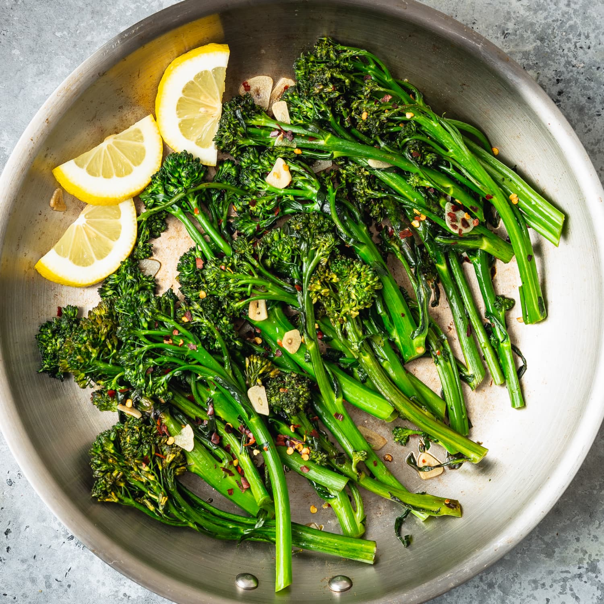

Brocollini

The best kind of greens
Ingredients
- 2 bunches Broccolini (about 1 pound total)
- 1 tablespoon olive oil
- 4 cloves garlic, thinly sliced
- 1 teaspoon kosher salt
- 1/2 teaspoon red pepper flakes (optional)
- 1/2 cup water
- Lemon wedges, for serving (optional)
Recipe Instructions
-
Rinse the Broccolini under cool water and shake off the excess water.
Trim about 1/2-inch off the bottom of the Broccolini stems.
-
Heat the oil in a large straight-sided skillet over medium-high heat
until shimmering. Add the Broccolini and sauté until the Broccolini is
bright green and some of the stems and tips of the florets are lightly
charred, 5 to 7 minutes.
-
Add the garlic, salt, and red pepper flakes, if using. Continue to sauté
until the garlic is fragrant, about 30 seconds. Add the water, cover,
and cook until the Broccolini is vibrant green and crisp-tender, 1 to 2
minutes. Serve immediately, with lemon wedges, if using.
This content was sourced from
thekitchn.com.
Return to Recipes main page